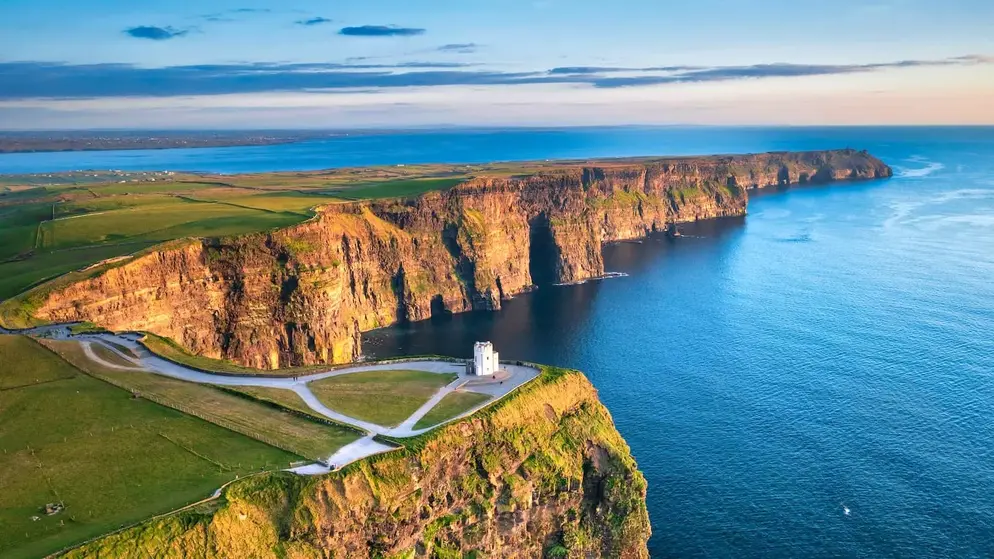

Discover the Cliffs of Moher
Located on the west coast of County Clare, the Cliffs of Moher rise above the Atlantic Ocean and offer spectacular coastal views. At their highest point, they reach 214 metres above sea level.

What Can You See?
Explore the designated viewing areas and discover different perspectives of the cliffs and coastline.
- Atlantic Ocean views from the viewing platforms.
- O'Brien's Tower near the highest point of the cliffs.
- Views towards the Aran Islands on a clear day.
- Exhibitions inside the visitor centre.
Plan Your Visit
Before travelling, check the official website for current opening hours, admission prices and visitor notices.
- Bring a waterproof jacket and suitable footwear.
- Check the weather forecast before setting off.
- Stay on designated paths and behind barriers.
- Respect signs, fencing and any path closures.
- Take your rubbish home and protect the landscape.
Parts of the wider coastal walk may be closed. Check the latest official walking information rather than assuming you can walk the entire route.